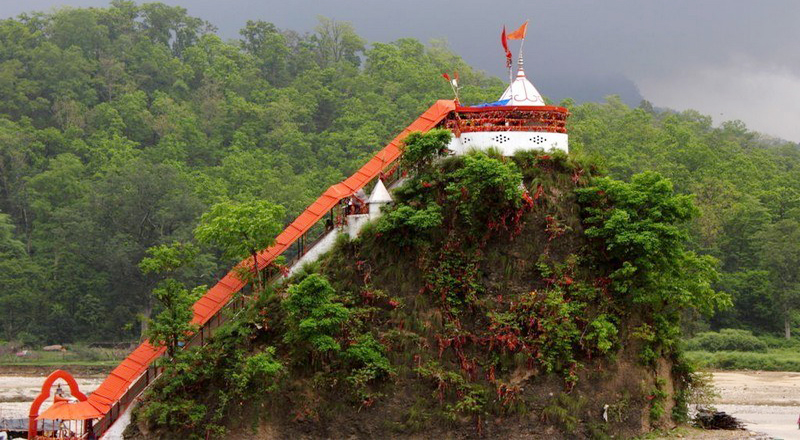
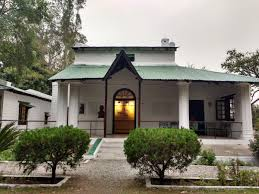
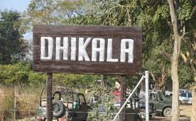
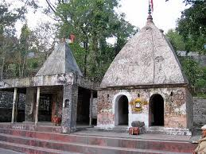
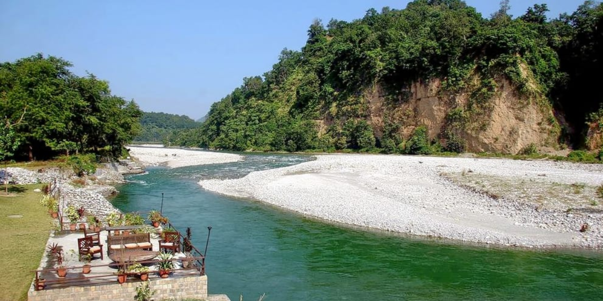

Ramnagar is situated in the Nainital district of Kumaon region of Uttarakhand state on the banks of Kosi River at an elevation of 345mts above sea level.
Ramnagar is not only the commencement point of Kumaon hills but it is also one of the gateways of renowned Jim Corbett National Park.
Ramnagar has successfully lured tourists and adventure lovers and it is capable of drawing attention. Ramnagar town was established in 1856 by Commissioner H.Ramsay. Ramnagar is situated in the rich farm belt of Terai, on the southeastern fringes of the great forests.
The busy market town of Ramnagar is the main administrative centre for Corbett National Park and Project Tiger. Ramnagar is connected with motorable roads as well as railway networks. Its proximity with Corbett National Park and Nainital makes it even more popular destination.
Ramnagar is the ideal spot for fishing camp and the place offers as an administrative centre for Corbett national park. Ramnagar is home of some of the best and popular hotels of Uttarakhand. Explore wildlife and enjoy bird watching in Ramnagar. You can do fishing in the Kosi River or do jungle safari in Corbett national park. Ramnagar is also famous for Litchi farming. The best time to visit Ramnagar is from Mid November to Mid June.
Ramnagar is about 85 km. from Soulitude in the Himalayas.
1.Girjia Devi Temple
(Move to link)Garjiya Devi Temple is one of the very old Devi temples in India, which is to be found in the border of a gorgeous village called Girjiya close to Ramnagar in Uttrakhand. Garjiya Devi Mandir also known as the Girija Devi Temple in Ramnagar, have an eye catching attractive vision of situated over a giant rock in Kosi River. Nainital have a well-off cultural tradition and Garjiya Devi Temple Uttarakhand attracts 1000s of devotees yearly because of the divinity that the place has to offer. Positioned close to Jim Corbett National Park, Ramnagar Uttarakhand, Garjiya Devi Mandir views its vast devotee crowd mostly throughout the time of Kartik Poornima. Kartik Poornima is the fair of lights. The Garjiya temple totally decorated with diyas lit by devotees and worshipers throughout the time of fair gives a superb panoramic vision over the Kosi River, which definitely demands for a visit to this divine Devi temple at least once in a life time.
2.Jim Corbett Museum
(Move to link)Corbett Museum is a heritage site dedicated to Sir Edwar James Corbett, popularly known as Jim Corbett, showcasing his life through his work and belongings. Jim Corbett was a British Hunter who turned naturalist and conservationist during the times of British colonisation of India. Mr. Corbett had a strong influence on wildlife preservation that is why the first National Park of India was named after this legendary person. The Museum displays numerous belongings of Mr. Jim Corbett like his general shooting attire and letters. The Corbett Museum is located in a small settlement situated near Kaladungi village named Choti Haldwani, of which Jim Corbett was the owner and later distributed these 89 hectares of land to the locals when Britisers left India in 1947. The Corbett Museum used to be his bungalow he used as his winter home in Uttarakhand. The Museum also displays the memories from his hunting's as he was known across the subcontinent for his shooting skills and called upon frequently to shoot leopards or tigers causing havoc. The museum is a delightful structure with white texture and green premises. Garden with well-maintained grass and large trees creates a soothing environment and makes you comfortable for your stroll in the museum. Jim Corbett was a multi-faceted person and the Corbett Museum showcases all of the aspects of his life.
3.Dhikala Forest Lodge
(Move to link)Dhikala forest lodge is run and managed by forest department under Corbett national park, it is located in the core area of Corbett national park. The entry gate for Dhikala is Dhangadi gate. You have to show your permits to forest guards here at this point. Dhikala forest lodge is 30 kms from Dhangadi gate, and it will take around 01 Hr to 01 Hr 15 Mins to cover this distance. This journey from Dhangadi gate to Dhikala itself is full of adventures, you have to cross dense sal forest and Ramganga River with several seasonal rivers, the animals you are most likely to spot while going to Dhikala are herds of spotted deer, Barking deer, Sambhar, Barasinga, Elephants, and Hyena, Fox, Monitor Lizard and even Tigers also. Its location at core area of Corbett national park made it a perfect place to stay for wildlife enthusiast.
4.Shri Hanuman Dham

(Move to link)Hanuman Dham is an exquisite temple dedicated to Lord Hanuman in Ramnagar. This remarkable religious site offers not only spiritual solace but also boasts an exquisite architectural design, both on its interiors and exteriors. The temple's visual appeal is further enhanced by an arched gateway adorned with two fish symbols, representing fortune and prosperity. Hanuman Dham is a prominent tourist attraction in Ramnagar near Jim Corbett National Park. At the heart of the complex stands a majestic temple dedicated to Lord Hanuman. It is a spiritual haven amid the majestic Himalayan valley, providing an ideal environment for introspection and meditation. The temple is culture-centred and is dedicated to preserving the rich heritage of India. Situated along the tranquil banks of the river Kosi, this sprawling ashram is surrounded by lush green lawns, soothing water bodies, and enchanting fountains, providing a serene setting for spiritual seekers and visitors.
5.Corbett fall

(Move to link)Corbett Falls is a beautiful natural waterfall located in the Ramnagar Forest Division of Uttarakhand. The falls is named after the famous British conservationist and author Jim Corbett, who spent much of his life in the region. It was developed as an Eco-tourism site in 1999 and was inaugurated by Mr. I.D. Pandey, IFS, the then Chief Conservator of Forests, Kumaun. It is situated at 27 km from Ramnagar at Ramnagar- Haldwani Road. Corbett Falls are situated amidst dense forests, and the gurgling sound of the water cascading down the rocks is music to the ears. It is surrounded by lush green forests, which make for a stunning backdrop. The falls are also home to a variety of flora and fauna, making it an excellent spot for nature enthusiasts and birdwatchers.
6.Sitabani Temple
(Move to link)Located in Sitabani Forest Reserve, Sitabani temple is an ideal location for tourism. The lovely structure of this historical temple makes it a wonderful location for site visitors from all around the world. Jackals, wild boars, barking deers, leopards, tigers, elephants, and king cobras are pleasing sights across the temple complex. This is one of the reasons, this temple is projected as a nationally protected heritage site by ASI. It’s a small temple devoted to the goddess Sita and is the the only temple with idols of Luv and Kush with a Shivling on the alternative side. It’s 24 km far from Corbett National Park. Being placed at the Mailani range, the temple provides visitors with an outstanding view of the magnificent surrounding hills and forests. It has water flowing via 3 channels and a small and iconic pond covered in its notable architecture which makes it a must go to area for nature and historical past lovers.
7.Kosi River
(Move to link)the survival of such magnificent wildlife, water is a crucial factor. Uttarakhand has hundreds of small and large rivers which are clean, hence, the water is used for irrigation and offers a wide variety of water activities to tourists. Jim Corbett National Park owes its survival to the two rivers that flow through the park - the Ramganga (West) and River Kosi. Ramganga originates in the Doodhatoli ranges of the Himalayas and flows out south-west to pass through the Corbett. River Ramganga is inhabited by key aquatic species like mahseer fish, endangered gharials, mugger crocodiles, and turtles, while River Kosi flows in proximity to the park near Dhikuli which is a tourist hub. Just like the river Ramganga, the Kosi too is inhabited by mahseer and attracts migratory birds. Jim Corbett National Park would not have existed without the Ramganga River since it is critical and the biggest of the valuable sources of water in the Jim Corbett. Ramganga River is a rain-nourished river which originates from Gairsain in the Lower Himalayas and navigates more than 100 km before entering Corbett which is close to Marchula valley. Inside the Jim Corbett, Ramganga River streams approximately 40 km till Kalagarh, where it enters the fields.
8.Durga Devi Zone

(Move to link)Durgadevi zone is located on the hills thus offering the most enchanting view of Nature along with the variety of wildlife. The Ramganga River and the Mandal River cross each other at several places in the zone, which adds the charm to this forest landscape. As like the other zones of the Corbett National Park, the Durgadevi zone too is the natural habitat for a large number of wonderful wildlife species including the few endangered wild animals. The favorable ecosystem and large landscape is the perfect habitat to survive and flourish the wildlife. The view of the mesmerizing topography and the rich wildlife attract nature-loving tourist to this zone. dhela safari The prime species of the flora of the zone includes Sheesham, Sisoo, Dhak, and Khair which are found in abundance in the park. Other vegetations of the zone, such as Chir Pine, Chir Choti, Gajar Sot, Banj Oak, Kanju, Jamun, Aamla, etc. are seen growing in most of the park area. The common fauna species of the zone are the Royal Bengal Tiger, Wild Boar, Wild Asian Elephant, various species of Deer like Spotted Deer, Sambar Deer, Barking Deer, Chital, Rhesus Monkey, Black Faced Monkey, Jackal, etc. The Durgadevi zone has the greater number of wild elephants than the other zones in the Corbett Park so this zone is particularly famous for the magnificent sighting of wild elephants and for the birding. The river water of the zone is the home to the famous Mahsheer fish which can be seen in the river channels of the zone.